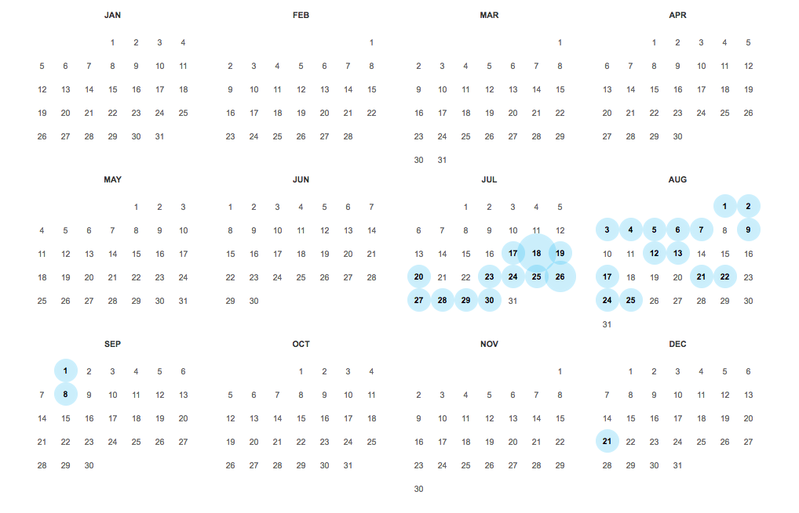
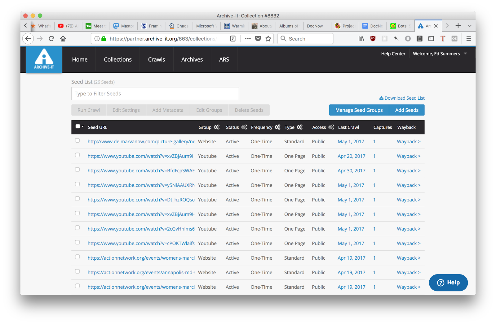

Archival coverage of the NYTimes homepage in 2016.
The Internet Archive also uses automated agents, spiders or
bots to automatically crawl the Internet and archive material.
As you can see from their coverage of the NYTimes homepage
for 2016. On December 13th there were 103 snapshots just
of the homepage itself.

Archival coverage of Igor Strelkov's VK profile in 2014.
Anatol Shmelev is a research fellow, curator of the Russia and
Eurasia Collection, and the project archivist for the Radio Free
Europe/Radio Liberty Collection, at the Hoover Institution.
In mid-July Anatol added this webpage to a list of URLs to be
routinely crawled by Archive-It to become par of a Ukrainian
Conflict collection.
Archive-It: 400 partner organizations in 48 U.S. states
and 16 countries worldwide. One of which is UMD. iSchool
PhD student Amy Wickner can tell you more if you are
interested.

Selecting URLs in the Archive-It Service